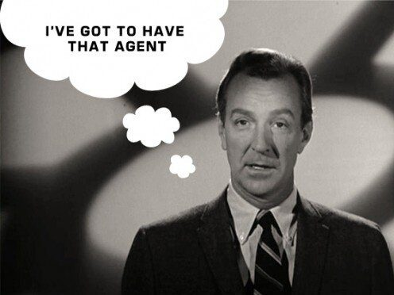

How is it that a screenwriter in Hollywood can get paid a six figure salary by simply giving a movie studio the option to see their work before anyone else does? How are some authors able to convince publishers to pay hundreds of thousands of dollars on their book advances? And, why is it that freelance journalists are almost perpetually broke and rarely make more than two dollars a word?
The answer to these questions lies in the history of these different industries. At one point most journalists had staff jobs at newspapers or on the mastheads of magazines. They were expected to produce a lot of material, had stable salaries and their work pretty much always belonged to the companies they worked for. Hollywood and book publishing were different. No one was guaranteed work. Writers came up with their own ideas and then sold them to movie studios and publishers on a freelance basis. They hired agents who knew the industry, looked out for their interests and held auctions to drive up the price of their work. Book publishers and studios paid the increasingly high prices and still turned a profit.
In the last decade the rise of the internet led magazines and newspapers to drastically reduce the size of their staffs. Now they produce a lot more content but have to rely on freelance labor to produce it. And here is where the problem started. They kept the old model of keeping all the rights for themselves, but never offered their freelancer workers stability in exchange. For some reason–most likely the general sense of inferiority that most writers feel–freelance journalists never fought to have their work sell at a market rate. They often gave up their movie rights and accepted kill fees and chronically late payments by the publications they worked for. The major publishing houses had no reason to raise rates and today they spend less than .6% of their gross revenues paying writers. Meanwhile, those publishers post quarterly reports that reflect multi-billion dollar valuations.
Today it’s almost impossible to make a living as a freelance writer without having a job on the side or a generous spouse to support your work. Even the most successful freelancers out there–I count myself among their numbers–know that you don’t make money from magazines, but from the book and TV deals that come afterwards. This doesn’t have to be the case. Being a journalist could actually be a middle class profession again. There’s a way to change the industry for the better.
Writers need to take a page from Hollywood and start fighting for better pay and stronger copyright. They need to hire agents to represent their very best work and force multiple publications to bid for the right to publish it. Of course, magazine publishers will resist at first. Some writers will lose assignments in the process. However, it will soon become clear to them that in order to publish the best stories magazines will have to give writers a cut of advertising revenues. When you take into account the incredibly high rate that magazines sell advertising for, this might mean that some writers could command as much as $20 for every published word–which would put them on par with what has become industry standard 10% royalty rate among book publishers.
For the last few weeks I’ve been talking to some of the highest profile literary agents and writers in the country in an attempt to suss out how feasible it would be to start a literary agency for magazine writers. Instead of pitching a magazine, writers would pitch the agency. And the agency would work for them to get the very best rate possible. For this to work, it will need to attract the best writers in the country to join the effort. It will need to become a broker of amazing ideas: an exclusive destination for top-notch reporting.
In other words, it will have to be the sort of effort that made being a script writer or book writer a viable profession. It is something that we could make happen together.
__